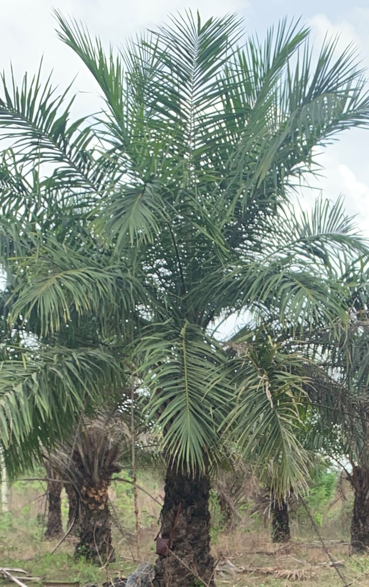

Plantation Agriculture
Long-term tree crops and estate farming — building enduring agricultural assets for food, industry and export.
Overview
Planting for the Future
Beyond annual cropping, Jodozo develops tree-crop plantations and managed estates. These long-horizon assets supply processing industries, stabilise our raw-material needs and create permanent rural employment. Inter-cropping in early years keeps plantations productive from day one.
- Estate planning, land development and block planting
- Inter-cropping with legumes in establishment years
- Managed harvesting and offtake agreements
Estate Crops
What We Plant
Oil Palm
Estate blocks for oil and downstream products.
Mango & Cashew
Nut and fruit orchards for local and export trade.
Timber & Shade
Agroforestry belts that shelter fields and streams.
Long-Term Investment Opportunities
Co-develop a plantation block with Jodozo Farms.